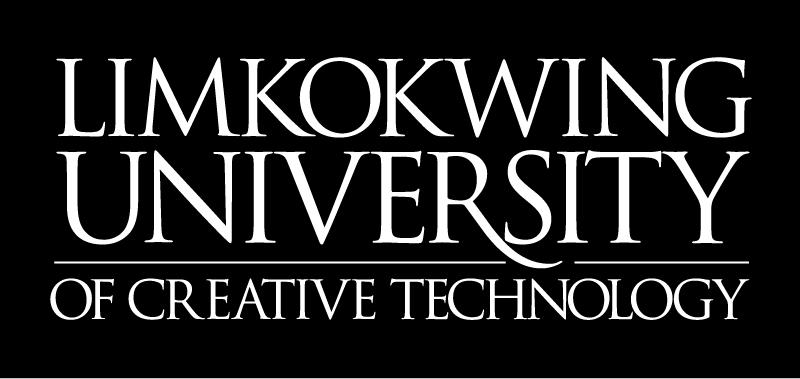

Automation Anywhere Certified Master RPA Professional (Automation 360)

certification
(2022)
A full stack Developer with some experience on developing using C# language, SQL and tools such as Automaiton Anywhere v2019 and SQL Server Management Studio (SSMS). Prefer and believes in the strength of team, share opinions when needed, help/rely on people when needed, information must be synchronized.
Bachelor of Science (Hons) in Games Technology

Limkokwing University of Creative Technology
(2017-2020)
Digital Project Services, Analyst (Digital Automation Developer)
Aspiro Sdn. Bhd. | Subang Jaya, Selangor | Sept 2020 - Present
Mainly focus on the development of RPA project for Asia Pulp & Paper (APP Indonesia).
GAME PROGRAMMER INTERN
Xhai Studios | Cyberjaya, Selangor | Dec 2019 - Feb 2020
Mainly focus on the development and publication of mobile game application using Unity game engine.
Automation Anywhere Certified Master RPA Professional (Automation 360)

certification
(2022)